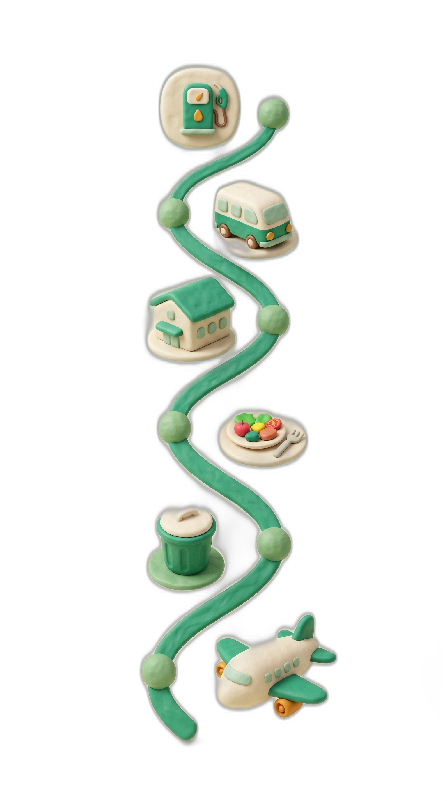

Atomic Diary
Your Day, Your Decisions, Your Data · Atom by Atom
Terra treats every carbon-relevant action as a diary entry. Not summaries. Not estimates. Atoms.

06:00
120.6
Diesel generator refuelled
08:30
30.8
Crew shuttle from hotel
10:00
17.6
Studio grid electricity
13:00
2,400
Lunch served (beef for 40)
17:00
6.0
Waste collected (mixed)
18:00
90.1
Producer flies to London
Daily Total
≈ 2,665 kgCO₂e
01
Real-Time Awareness
See your footprint as it happens, not in a quarterly report. Every entry has a source, a person, a timestamp.
02
Pattern Recognition
"Catering is 45% of our daily emissions. Did we notice that last week?" Data reveals what intuition misses.
03
Emotional Connection
You don't abstractly "care about climate." You see your flight, your generator, your lunch.
Film/TV
Construction
Logistics
Corporate


04 / 11